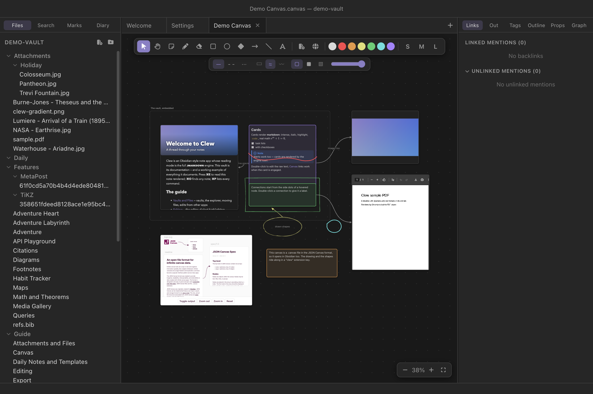

Canvas
The canvas
A canvas is an infinite board: notes, cards, images, PDFs, web pages and
even other canvases, arranged in space and joined by connections. On top
of that spatial layer Clew adds a full drawing layer — freehand ink,
hand-drawn shapes, standalone text, and groups that bind any of it
together — all saved in a .canvas file that Obsidian can
still open. This chapter covers the whole board, from the file format to
the last context-menu entry.
What a canvas is
Where a note is a linear document, a canvas is a plane. You place things on it at whatever position and size you like, pan and zoom freely, and draw connections between them. The things a canvas holds are called nodes: text cards, embedded files, web pages, and frames. Alongside the nodes, and unique to Clew, live strokes (freehand ink) and shapes (rectangles, ellipses, diamonds, arrows, lines, text) — the drawing layer — plus groups that can tie nodes, shapes and strokes into units that move together.

The best introduction is the demo vault's own example. Open
demo-vault and then Projects/Demo Canvas.canvas,
which exercises everything this chapter describes.
Creating a canvas
There are three equivalent ways to make one:
- File → New Canvas in the menu;
- the command palette (⌘P) → Create new canvas;
- right-clicking a folder (or empty space) in the file explorer → New canvas.
A canvas opens in a tab like any note, participates in splits and tab history, and auto-saves as you work — edits are written to disk half a second after you make them, and the tab keeps its own ⌘Z history of up to a hundred steps. If you open the same canvas in two split panes, the panes stay in live sync. If the file changes on disk while you have unsaved edits — a sync tool, or Obsidian editing the same vault — a banner appears and auto-save pauses until you pick Keep my version or Load disk version; loading the disk version still leaves your own version one ⌘Z away.
The file on disk
A canvas is a single JSON file in the open
JSON Canvas 1.0 format — the same
format Obsidian uses — with nodes and edges
arrays at the top level. Everything Clew adds beyond the specification —
ink strokes, shapes, groups, and the flowchart-style node and edge
styling — lives under a single top-level clew key, which
other applications ignore but preserve. A schematic example:
A .canvas file
{
"nodes": [
{ "id": "a1", "type": "text", "text": "An idea",
"x": -140, "y": -60, "width": 250, "height": 100 },
{ "id": "b2", "type": "file", "file": "Projects/Plan.md",
"x": 180, "y": -120, "width": 420, "height": 400 }
],
"edges": [
{ "id": "e1", "fromNode": "a1", "fromSide": "right",
"toNode": "b2", "toSide": "left", "label": "expands into" }
],
"clew": {
"strokes": [ { "id": "s1", "color": "2", "width": 3, "points": [12, 40, 15, 44] } ],
"shapes": [ { "id": "h1", "kind": "ellipse", "x": 300, "y": 200,
"width": 160, "height": 90, "color": "4", "fillStyle": "hachure" } ],
"groups": [ { "id": "g1", "members": [ { "kind": "shape", "id": "h1" },
{ "kind": "stroke", "id": "s1" } ] } ]
}
}.canvas file in Obsidian and you will see
the nodes and connections exactly as Clew laid them out. Obsidian does
not display the ink, shapes, groups or flowchart styling — it has no
concept of them — but it preserves the
clew key when it saves, so nothing is lost by
round-tripping. Clew also defends the data on its side: every load
re-checks the group structure, so even when Obsidian deletes nodes
that belonged to a group, the group degrades cleanly instead of
corrupting (see Groups).
Getting around
The camera is always yours: scroll to pan in any direction, pinch or ⌘-scroll to zoom at the cursor. Hold Space and drag (or drag with the middle mouse button) to pan by hand, or switch to the hand tool with H. The controls at the bottom right zoom in and out, reset to 100%, and fit the whole canvas in the window — the fit is also on ⇧1. Zoom runs from 8% to 300%. The camera position is remembered per tab, so a canvas reopens where you left it.
The interaction model
One decision shapes how the whole canvas feels: node content is inert until you engage it. A canvas full of live content — a scrollable note, a web page, a PDF viewer — poses a conflict: when you scroll over an embedded note, should the note scroll, or the canvas pan? Clew resolves it by keeping content non-interactive by default, so panning and dragging always win and the board behaves predictably no matter what is on it. When you want to interact with a node's content, double-click it — the node is now engaged, and you can scroll the note, click its links, tick its checkboxes, or browse the web page. Press Esc or click outside the node to return to canvas mode. Esc goes to the innermost thing that wants it first: with the caret in a text field, inside a PDF viewer, with a dialog open, or on a widget that uses the key itself — a map clearing its measurement, say — that thing keeps it, and a click outside is the way out.
All the manipulation affordances — resize handles, connection anchors, the selection marquee — are drawn by the canvas itself in an overlay, so they work identically over every kind of node. An engaged node draws none of them: its content has the pointer, so the resize handles and anchor dots go, and a ring in the accent colour marks it instead, whatever colour the node is. Leave it and they come back.
Selecting
With the select tool (V, the default), click anything — a node, a shape, an ink stroke — to select it. Shift-click adds to or removes from the selection. Drag on empty canvas to sweep out a marquee, which selects every node, shape and stroke it touches (hold Shift to add the marquee's catch to what is already selected). ⌘A selects everything. Connections are selected by clicking them directly. Pressing Esc clears the selection.
Moving and resizing
Drag any member of the selection and the whole selection moves. The arrow keys nudge the selected nodes and shapes by one pixel — ten with Shift. A single selected node or shape shows eight resize handles on its outline (lines and arrows show a handle at each endpoint instead); drag a handle to resize. Ink strokes are the exception: a freehand stroke is a trail of points with no meaningful resize, so strokes never show handles — see Ink.
Duplicating and deleting
⌘D duplicates the selection, offset slightly, and selects the copies. The duplicate is faithful: connections between selected nodes are copied along with them, and any group lying wholly inside the selection is reproduced as a new group. Backspace (or Delete) deletes the selection; deleting a node also removes the connections attached to it.
Stacking order
Things on a canvas paint in a defined order, and you can change it: right-click a node or shape and use the Order row — bring to front, bring forward, send backward, send to back. Ink strokes offer Bring to front and Send to back in their own menu. The order is part of the file (paint order is array order, per the JSON Canvas specification), so it survives saving and reopening.
What a canvas holds
Cards
A card is a floating piece of Markdown. Double-click empty canvas to make one (the Obsidian gesture), or press C and click, or right-click empty canvas → New card. Double-click an existing card to edit its text in place; Esc or a click elsewhere commits the edit.
Cards are not a cut-down preview: their text renders through the same jmarkdown engine as reading mode. Math typesets, GitHub-style alerts render, the full dialect applies — the same text produces the same result in a card and in a note. (A card paints instantly with a lightweight renderer, and the engine's render swaps in a moment later.) Right-click a card for Edit card, colours, flowchart shapes (see below), ordering, and delete.
Notes — live previews
A note placed on a canvas is not a snapshot or a link — it is a live rendered preview of the real file, produced by the same rendering pipeline as reading mode and updated whenever the note changes. Mathematics, mermaid diagrams, citations, checkboxes, even query tables and kanban boards all work; tick a checkbox or drag a kanban card inside an embedded note and the change is written back to the source file, exactly as it would be in a normal reading-mode tab.
To add one, use the Add note or file… button on the toolbar (or right-click empty canvas), and pick the note. Double-click the embed to engage it — scroll, click links, interact — and Esc to return to the board. For full editing, right-click → Open in tab.
Images, PDFs and media
The same Add note or file… picker places any vault file on the canvas. Images display directly; PDFs get Clew's full viewer, so an engaged PDF node can be paged, searched, zoomed and annotated — the marks go into the file, so they are there in the note embed and the viewer tab too; audio and video files get playback controls. Files with no viewer appear as a named chip that still opens in a tab from the context menu. An Excalidraw drawing becomes a working Excalidraw editor once the node is engaged.
An office document on a canvas shows
a static thumbnail by default, kept fresh as the file changes. The
node's context menu has an Office row that flips it to
Live — a full editable LibreOffice in the node, one booted
instance per live node (roughly 1.6 GB each, so a board of live
spreadsheets is a choice to make deliberately). Edits save with the
node's own toolbar Save and are guarded on close like the office tab;
the choice is stored under the file's clew key, which
Obsidian ignores.
Web pages
The globe button on the toolbar (Add web page…) embeds a live
web page; pasting a URL onto the canvas does the same. Engage the node
to browse. Web nodes are contained deliberately: pop-ups are denied
(links that try to open new windows are sent to your system browser
instead), and navigation inside the node is pinned to
http(s) URLs. All web nodes share one persistent browsing
session, so a site you sign in to stays signed in. Right-click a web
node for Open in browser and Edit URL….
Frames
Select two or more nodes and right-click → Enclose in frame to draw a labelled box around them. A frame is spatial: it carries whatever nodes sit inside its bounds, so dragging the frame moves its contents, while dragging a node out of the frame removes it from the frame's cargo. Double-click a frame to rename it.
group node — Obsidian's own
grouping construct — so frames survive the round-trip and behave the
same there. Because the specification only knows about nodes, a frame
cannot hold ink or shapes. When you need to bind drawing-layer objects
together, or want membership that survives moving things apart, use a
Clew group instead.
Portals
Add a .canvas file to a canvas — the same file picker
offers them — and it renders as a portal: a live,
read-only miniature of that entire other canvas, cards, edges, note
previews, ink and shapes included, scaled to fit its box. The portal
rebuilds whenever the other canvas changes on disk. Double-click a
portal to open the real canvas in a tab. Portals do not recurse: a
canvas node inside a portal draws as a name chip rather than
another miniature.
Connections
Hover over a node and four anchor dots appear, one just outside each side (outside, so they never fight with the resize handles on the border itself). Drag from a dot to another node: the connection snaps to the nearest side of the target as you approach, and releasing creates the edge with an arrowhead at the destination. When you later move a node, its connections re-pick their sides automatically so they keep facing the other endpoint — but a side you chose deliberately is kept as long as it still makes geometric sense.
An engaged node shows no dots, so a connection from the note or page you are working in costs one click outside it first, to hand the pointer back to the canvas.
Double-click a connection to give it a label, which sits at the midpoint of the path. Right-click a connection for the full set of options:
- Colour
- The swatch row: the default line colour, or one of the six accent colours.
- Arrows
- An arrowhead at the destination (→, the default), at both ends (↔), or none (—).
- Line
- Solid, dashed, or dotted.
- Path
- How the connection is routed: curved (the default), straight, or square — axis-aligned elbows, the flowchart look.
- Edit label… / Delete
- Labelling without the double-click, and removal. A selected connection can also be deleted with Backspace.
Arrowheads, colours and labels are standard JSON Canvas fields and
travel to Obsidian; the dash and routing styles are Clew styling and
live under the clew key.
Drawing
Everything so far exists in some form in other canvas tools. The drawing layer is where Clew goes further: real freehand ink and hand-drawn shapes, directly on the board, in the same file.

demo-vault/Projects/Demo Canvas.canvas) open in
Clew, with the canvas toolbar and the style bar for shapes.Ink
The pen (P) draws freehand strokes. The toolbar sets the pen: a swatch row with the default ink colour plus six accents, and three nib widths (S, M, L). The eraser (E) removes whole strokes as you drag across them, and right-clicking empty canvas offers Clear drawing, which removes every ink stroke on the canvas (shapes are unaffected).
Ink strokes are first-class objects, not pixels. With the select tool, a stroke behaves like everything else on the board: click it to select it (it picks up an accent-coloured halo along the ink, plus a thin bounding box for grabbing), shift-click or marquee to take several, drag to move, ⌘D to duplicate, Backspace to delete. The right-click menu on a stroke recolours every selected stroke via the swatch row, groups and ungroups, re-orders (Bring to front / Send to back), and deletes. Two deliberate differences from shapes: selected ink shows a halo rather than changing colour — Clew will not misrepresent your drawing while you work on it — and strokes never grow resize handles, because a freehand trail of points has no sensible resize. A stroke in the selection also suppresses handles on everything else selected with it, so a drag can only ever mean move.
One nicety of the hit-testing is worth knowing: ink is painted above shapes, and it is hit-tested above them too, so a stroke drawn across a filled shape stays selectable. Nodes, however, always win over ink — a card must remain clickable even with a scribble across it.
Shapes
Five tools drag out shapes: rectangle (R), ellipse (O), diamond (D), arrow (A), and line (L). After each shape the tool returns to select, so you can adjust immediately. Double-click a shape to give it a label.
The style bar under the toolbar controls how shapes look — it sets the defaults for new shapes, and applies the same change to whatever shapes are selected:
- Stroke
- Solid, dashed, or dotted outlines.
- Sloppiness
- Three levels of hand-drawnness: architect (clean geometric lines), artist (the sketchy default), and cartoonist (an exuberant scrawl).
- Fill
- None, solid, or hachure — the diagonal pen-stroke fill.
- Opacity
- A slider from 10% to 100%.
The sketchy look is generated the way Excalidraw generates it: each outline is drawn as two slightly bowed, jittered passes. The randomness is seeded from the shape's own identity, so a shape keeps its exact wobble across re-renders, saves and app restarts — your diagram does not shimmer every time you open it.
Standalone text
The text tool (T) places text directly on the drawing layer, outside any card. When text is in play the style bar grows two more groups: a choice of four typefaces — hand (the default, matching the sketchy shapes), sans, serif, and mono — and four sizes. Double-click text to edit it; committing an empty edit on a freshly placed text object removes it.
Flowchart styling for nodes
The drawing layer meets the node layer in the node context menu. Any
card, note, file or web node can take a flowchart shape:
pill (terminal), circle,
diamond (decision), parallelogram
(input/output), or predefined process — plus dashed or
dotted borders and a transparent fill. Combined with square-routed
connections and edge labels, a canvas of cards becomes a proper
flowchart. Like everything Obsidian's format cannot express, this
styling lives under the clew key: in Obsidian the same
nodes appear as plain rectangles, and come back styled.
Groups
Select any two or more objects — nodes, shapes, ink strokes, freely mixed — and press ⌘G (or right-click → Group). From then on the group behaves as a single object: clicking any member selects the whole group, which draws one dotted outline around everything, and dragging any member moves the group as a unit. Shift-clicking a member toggles the entire group in and out of a larger selection. ⌘⇧G (or Ungroup) dissolves it.
A group is a membership set, not a region — the complement of a frame. Its members stay grouped however far apart you drag them, and it can hold ink and shapes, which frames cannot. Groups are deliberately flat and disjoint: there is no nesting, and no object belongs to two groups. When a new group would touch existing ones, it absorbs them — grouping a selection that overlaps two groups yields one group containing everything. A group that falls below two members dissolves.
clew key, so Obsidian neither shows
nor edits them — but it can still delete nodes that belong to one.
Clew re-checks every group each time it loads or saves the file:
members that no longer exist are dropped, an object claimed twice
keeps its first group, and groups reduced below two members dissolve.
An outside editor can therefore never corrupt a canvas's groups — at
worst a group quietly shrinks.
Canvases inside notes
The embed syntax works for canvases too:
You write
![[Demo Canvas.canvas]]In reading mode this renders a live, read-only view of the whole scene — cards, connections, ink, shapes, note previews — scaled to fit the note column, re-rendered whenever the canvas changes, with a title link that opens the real thing. The embedded scene handles like the canvas proper: scroll to pan, pinch or ⌘-scroll to zoom at the cursor, drag empty background to pan by hand, double-click the background to re-fit. Note previews inside the scene scroll and follow clicks, media plays, and web nodes load live where the site allows itself to be framed. Embeds do not recurse indefinitely: a canvas inside a note inside that same canvas bottoms out in a placeholder rather than a hall of mirrors. (In a vault published as a website, a canvas embed appears as a titled placeholder — the static site has no canvas renderer.)
Exporting the drawing as PNG
Right-click empty canvas → Export drawing as PNG… (the entry appears once the canvas has any ink or shapes) renders the drawing layer — every stroke and shape, at twice resolution, on a transparent background — and asks where to save it. The colours are baked in from the current theme, so the PNG looks exactly like the canvas did. Nodes and connections are not part of the drawing layer and are not included; this is the tool for lifting a sketch off the board and into a document or a slide.
Renames follow
Canvas file nodes refer to vault paths, and Clew treats them like
wikilinks when things move: rename or move a note, an image, a PDF — any
file a canvas embeds — and every .canvas file in the vault
is rewritten to match. A canvas never wakes up with a dead embed because
its subject was renamed.
Reference
Keys on the canvas
| Key | Action |
|---|---|
| V / H | Select tool / pan (hand) tool |
| C | Card tool (or double-click empty canvas) |
| P / E | Pen / eraser |
| R O D A L | Rectangle, ellipse, diamond, arrow, line |
| T | Standalone text |
| Space-drag | Pan (also middle-mouse drag) |
| Scroll / ⌘-scroll | Pan / zoom at the cursor |
| ⇧1 | Zoom to fit |
| ⌘A | Select all |
| ⌘G / ⌘⇧G | Group / ungroup the selection |
| ⌘D | Duplicate the selection |
| ⌘Z / ⌘⇧Z | Undo / redo (per canvas tab) |
| Backspace | Delete the selection |
| Arrow keys | Nudge selected nodes and shapes 1 px (10 px with Shift) |
| Esc | Leave an engaged node; else clear the selection; else return to the select tool |
The right-click vocabulary
| Right-click on… | Offers |
|---|---|
| Empty canvas | New card · Add note or file… · Add web page… · Group / Ungroup / Enclose in frame (when the selection allows) · Select all · Zoom to fit · Export drawing as PNG… · Clear drawing |
| A node | Colour swatches · type-specific entries (Edit card; Open in tab; Open in browser and Edit URL…; Rename group on a frame) · Group / Ungroup / Enclose in frame · flowchart Shape, Border and Fill · Order (front / forward / backward / back) · Delete |
| An ink stroke | Colour swatches (recolours all selected strokes) · Group / Ungroup · Bring to front / Send to back · Delete |
| A shape | Colour swatches · Group / Ungroup · Fill · Line (solid/dashed/dotted) · Slop (architect · artist · cartoonist) · Order · Edit label… (Edit text on a text object) · Delete |
| A connection | Colour swatches · Arrows (→ ↔ —) · Line (solid/dashed/dotted) · Path (curved/straight/square) · Edit label… · Delete |
See also
- Links and embeds — the
![[…]]syntax that puts a canvas inside a note, and how wikilinks resolve. - How rendering works — the pipeline behind the live note embeds and engine-rendered cards.
- Graph view — what ⌘G opens when you are not on a canvas.